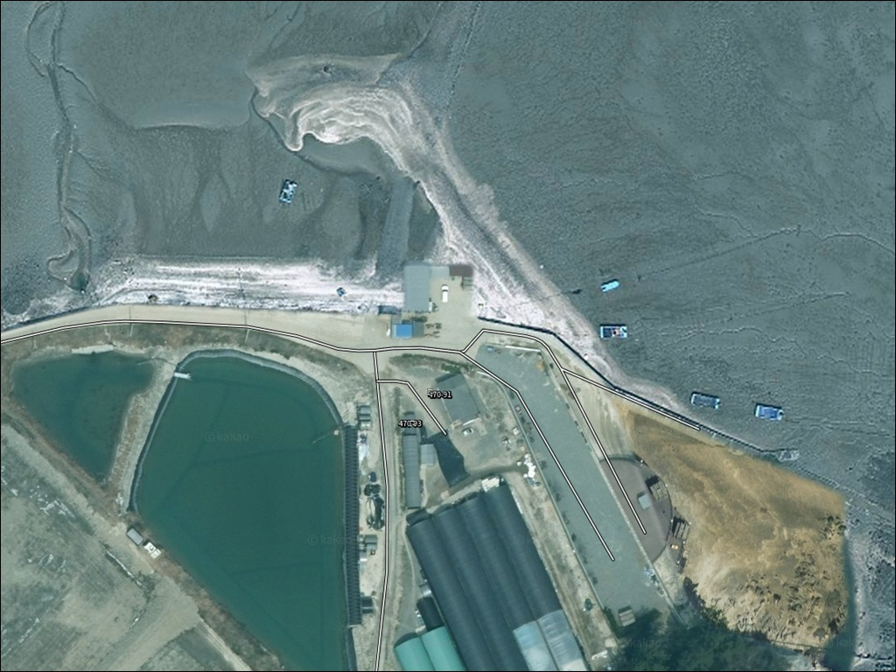
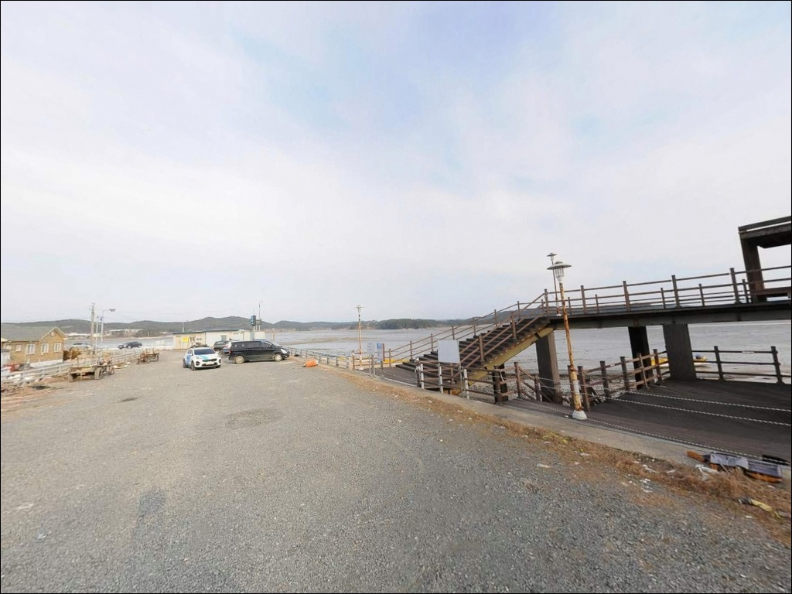
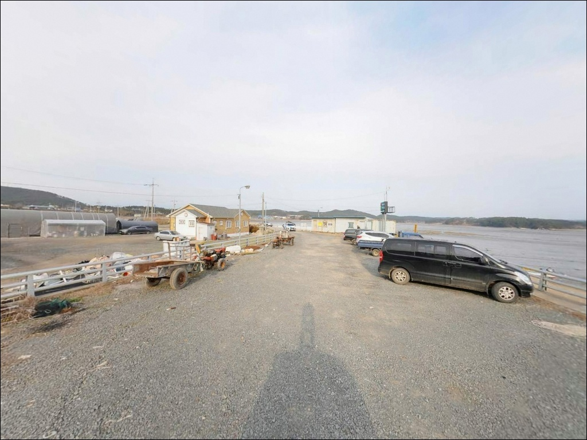
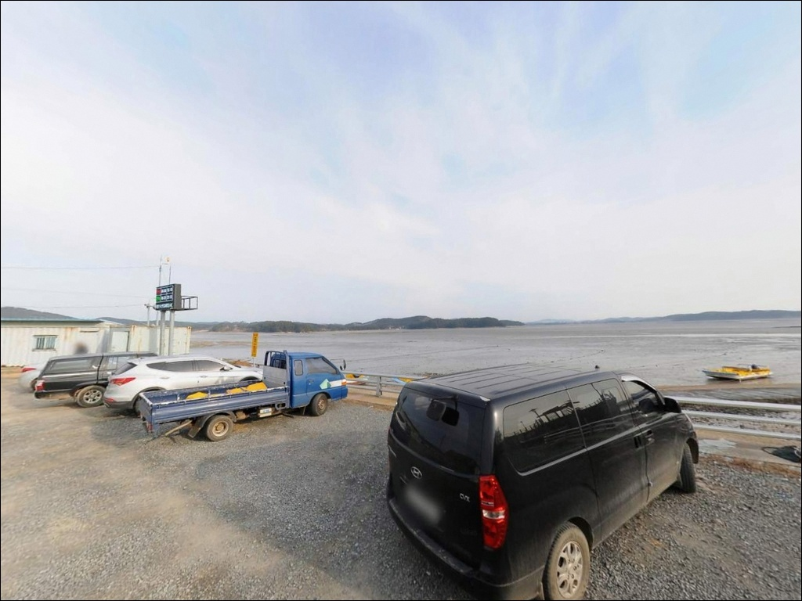
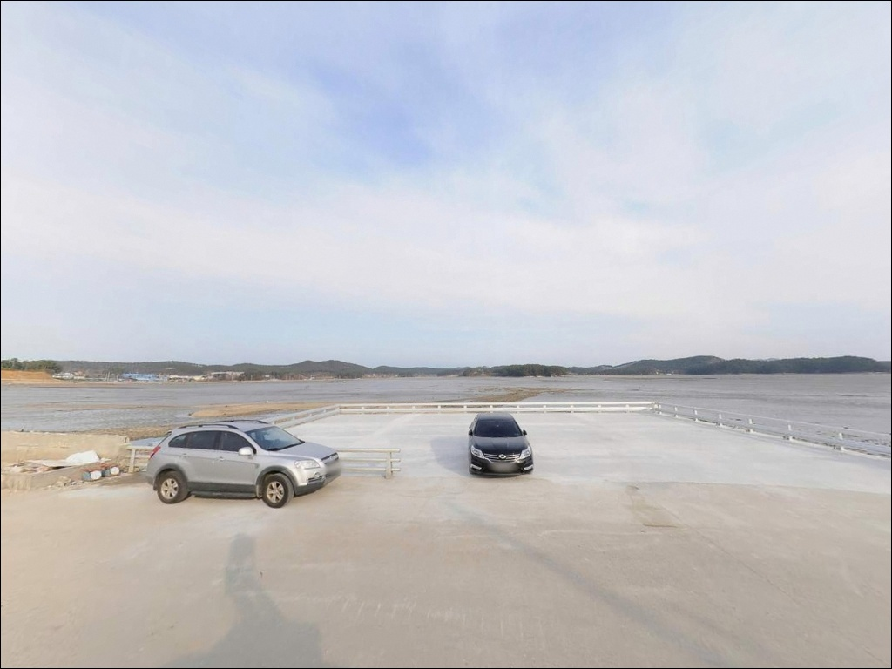
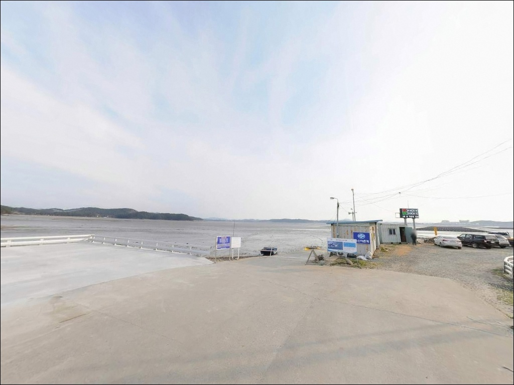
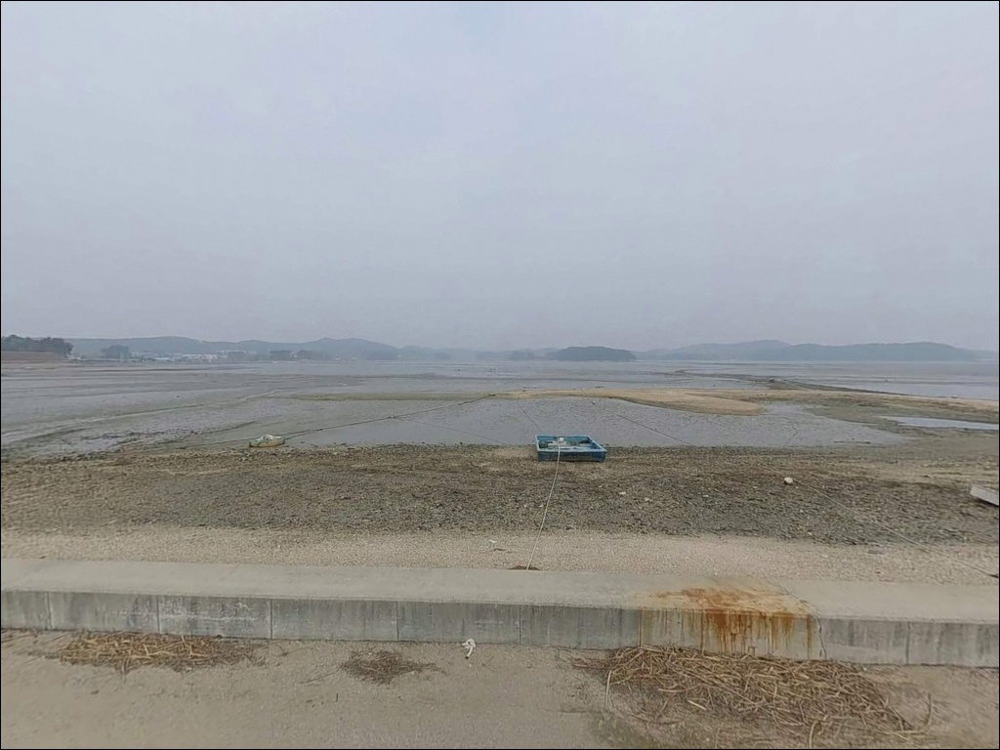
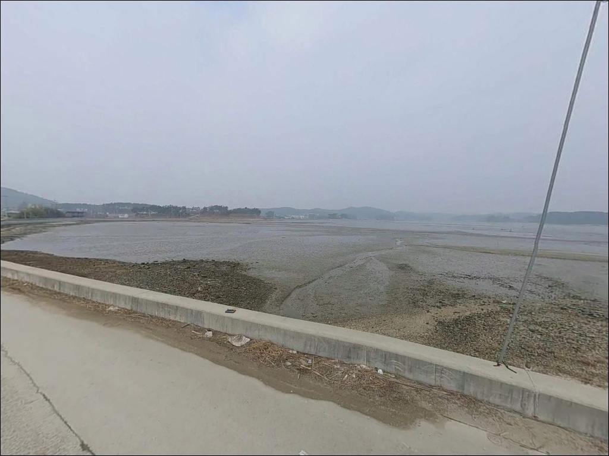
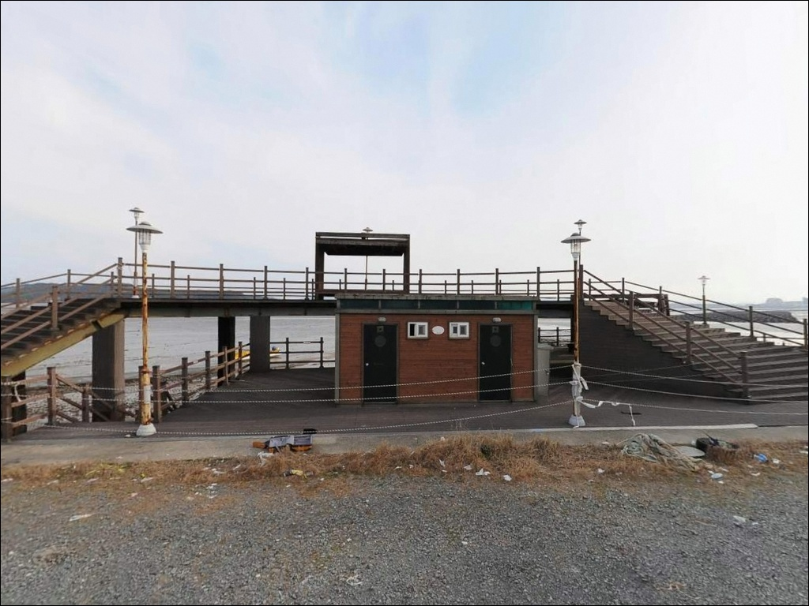

용신리 선착장, 충남 태안군 현지 느낌 살아있는 차박, 낚시 장소
이 페이지에는 광고(제휴 링크 포함)가 있으며, 광고 링크를 통해 구매하면 운영자가 판매 수익 또는 수수료를 받을 수 있습니다. 포인트 사진: 카카오맵 스카이뷰·로드뷰. 이 페이지의 지도·사진 이미지는 카카오맵의 실제 서비스 이미지와 다를 수 있습니다.


포인트 안내
용신리 선착장
충남 태안군 근흥면 용신리 910-1
간조 시간대에 맞춰 이 선착장을 찾으면
발판 앞으로 갯벌이 넓게 드러나
채비를 던질 수조차 없는 상황이 됩니다.
만조 전후 2~3시간이라는 짧은 낚시 가능 시간을 놓치면
진입에 쓴 시간이 그대로 낭비되는 구조이기 때문에,
물때 계산이 이 포인트 방문의 전제 조건입니다.
충남 태안군 근흥면 용신리에 자리한 이 선착장은
용신어촌체험마을과 맞닿은 소규모 마을형 선착장입니다.
원안해수욕장과 인접한 갯벌·갯바위 혼합 해안선 위에 위치하며,
서해 내만형 특성상 조수 간만 차가 크고
물때에 따른 낚시 여건 편차가 뚜렷한 포인트입니다.
이 글은 용신리 선착장의
지형 조건과 물때 판단 기준, 진입 환경,
낚시 스타일 적합성에 집중합니다.
조황 단정이나 특정 어종 보장은
이 글의 범위에 포함되지 않습니다.

1. 진입 동선과 포인트 접근성
용신리 선착장 진입은 마을 내부 도로를 통해 이루어집니다.
근흥면 일대에는 2차선 도로가 개통되어 있어
대로 구간까지의 접근 자체에는 큰 어려움이 없습니다.
다만 마을 안쪽으로 들어갈수록
도로 폭이 좁아지는 구간이 있을 가능성이 높아
어촌 마을 특성 그대로의 좁은 길이 이어질 수 있습니다.
선착장 끝까지 차량을 몰고 들어가면
회차 공간이 여유롭지 않을 가능성이 있습니다.
캠핑카나 대형 SUV라면
선착장 초입에서 진입 여부를 먼저 판단하는 편이 안전하며,
출발 전 위성지도로 진입 동선을
미리 확인해 두는 것이 헛걸음을 막는 첫걸음입니다.
주차는 선착장 인근 소규모 공터나
마을 도로변 여유 공간을 활용하는 방식이 일반적입니다.
어촌체험마을 운영 차량과 어선 작업 동선을
막지 않는 자리를 먼저 확인하고,
주차 허용 여부는 현장에서 직접 확인하는 것이 기본입니다.

2. 차박 환경과 야간 체류 여건
용신리 선착장은 마을과 가까이 붙어 있는 구조입니다.
야간에도 민가 쪽의 생활 조명이 어느 정도 이어질 가능성이 있고,
통행이 완전히 끊기지 않는 환경이라
외딴 방파제 수준의 프라이버시를 기대하기는 어렵습니다.
낚시를 마친 뒤 차 안에서 조용히 휴식하는 방식이
이 마을 분위기에 더 잘 맞습니다.
선착장 공터 자체는 공간이 넉넉하지 않은 편이라
차박을 메인 목적으로 계획한다면
인근 용신어촌체험마을 유료 차박 사이트를
미리 확인해 두는 편이 현실적입니다.
화장실 등 기본 시설이 갖춰진 형태로 운영되는 것으로 확인되므로,
운영 현황과 예약 방법은 출발 전 체험마을 측에 직접 문의하십시오.
야간에는 선착장 발판과 갯바위 구간이 어두울 수 있어
개인 조명 장비는 필수입니다.
서해 갯벌 특성상 들물이 빠르게 밀려오는 구간이 있을 수 있으므로,
야간 낚시 중에는 발 아래 조위 변화를
수시로 확인하는 습관이 중요합니다.


3. 주변 편의시설 및 인프라 현황
용신리 선착장 주변은 편의점이나 마트를 기대하기 어려운 환경입니다.
소규모 어촌 마을 특성상 식수, 얼음, 낚시 소품은
출발 전에 모두 갖추는 것이 기본입니다.
완전 자급 체제로 진입한다는 전제를 두고
준비 목록을 짜는 것이 현실적인 방법입니다.
반경 3km 이내에는 채석포항이 있습니다.
태안 문화관광 공식 등록 어항으로,
부족한 소품이나 인근 낚시 여건을 확인하는 데
활용할 수 있는 지점입니다.
채석포항 방향 동선을 미리 파악해 두면
현장에서 유연하게 대응할 수 있습니다.
반경 10km권으로 이동하면 신진항이 있습니다.
태안의 대표적인 항구로 해산물 식당과
생활 인프라가 집중되어 있어
부족한 물자 조달에 활용하기 좋습니다.
응급 의료 기관은 군립태안보건의료원이 약 9km 거리에 위치해 있으므로
비상 상황 발생 시 이동 경로를 미리 확인해 두십시오.

4. 물때를 모르면 헛걸음이 되는 이유와 방문 전 준비
용신리 선착장 방문 전 가장 먼저 확인해야 할 것은 물때입니다.
서해 내만권은 조수 간만 차가 크기 때문에
사리 물때 간조 시에는 갯벌이 넓게 드러나
낚시 자체가 불가능해지는 상황이 됩니다.
바다타임에서 만조 시각을 먼저 확인하고
그 앞뒤 2~3시간을 기준으로 출발 시각을 맞추는 것이
이 포인트 방문의 첫 번째 원칙입니다.
출발 당일 아침 기상 예보도 반드시 다시 확인하십시오.
서해 지역은 날씨 변화가 빠르고,
기상 악화 시 파도가 짧고 강하게 일어나는 특성이 있습니다.
갯바위 구간은 미끄러짐 위험이 높으므로
미끄럼 방지 신발은 필수이며,
야간 출조 시 단독보다는 동반자와 함께하는 것이 안전합니다.
마을 선착장은 어선 접안과 조업이 이루어지는 생활 공간입니다.
어선 동선과 어구 주변에 자리를 잡지 않는 것이 기본 매너이고,
체험마을 운영 구역에 해당할 수 있는 갯벌 구간은
진입 전 현장에서 직접 확인하는 편이 좋습니다.
방파제와 선착장 구분 없이 구명조끼 착용은 기본입니다.

5. 지형 기반 낚시 여건 분석
용신리 선착장은 모래와 뻘이 혼합된 단단한 갯벌과
갯바위가 함께 형성된 해안선 위에 자리합니다.
선착장 구조는 소형 어선 접안용 시설 중심이며,
끝단 부근에서 수심이 다소 깊어지는 구간이
형성될 가능성이 있습니다.
수심은 전반적으로 얕은 편이고,
간조 시에는 갯벌이 앞으로 넓게 드러납니다.
만조 전후 2~3시간이 낚시 여건이 살아나는 타이밍이며,
들물이 진행 중일 때는 선착장 끝단과
갯벌이 끝나는 수심 급변 구간을 중심으로
입질을 기대해볼 수 있습니다.
용신리 선착장은 만조 전후 2~3시간에 낚시 가능 구간이 집중되는
조위 의존형 서해 내만 포인트입니다.
선착장 인근에는 갯바위 구간도 확인됩니다.
갯바위 경계는 어종의 먹이 활동 구간이 형성될 가능성이 있어
만조 전후 조위가 올라왔을 때 탐색해볼 만한 자리입니다.
이 일대에서 기대해볼 수 있는 어종은
태안 근흥면 연안 공통 어종인 우럭, 쥐노래미, 광어, 도다리, 붕장어 정도로,
이 포인트에서 확인된 조황이 아닌 지역 전반의 추정임을 감안하십시오.
방문 전에 "용신리 선착장 낚시", "채석포항 조황" 등의 키워드로
최신 조황을 반드시 검색해 보시기 바랍니다.


6. 포인트에 어울리는 낚시 스타일
이 포인트의 지형 조건과 가장 잘 맞는 방식은 원투낚시입니다.
갯벌과 모래가 혼합된 바닥 구조에서
선착장 끝단 수로 방향으로 채비를 던지는 방식이 기본이며,
들물이 진행 중일 때 짧은 캐스팅으로
수심이 살아나는 구간을 집중 탐색하는 것이 유리합니다.
도다리나 붕장어를 기대해볼 수 있는 지형 구조입니다.
갯바위 구간을 활용한 루어낚시도 노려볼 만합니다.
만조 전후 수심이 확보된 시간대에
소형 웜 채비나 라이트 루어를 활용해
갯바위 경계선을 천천히 탐색하는 방식입니다.
우럭이나 쥐노래미를 기대할 수 있는
지형 조건은 갖추어져 있는 편입니다.
갯벌과 갯바위가 혼재하는 용신리 지형에서는
들물 진행 중 원투채비를 짧게 던지는 방식이
지형 조건과 가장 잘 맞습니다.
찌낚시도 잔잔한 내만 환경이 형성되는 만조 전후에
가볍게 운용할 수 있는 선택지입니다.
한 가지 방식에만 집중하기보다
복수 채비로 대응하는 것이
물때와 조건 변화에 유연하게 대처하는 방법입니다.
봄과 가을은 서해 연안 어종이 근해로 접근하는 시즌으로,
이 시기를 활용하는 편이 좋습니다.

7. 대안 포인트와 플랜 B 동선
용신리 선착장 조건이 여의치 않을 때
가장 먼저 고려할 대안은 채석포항입니다.
반경 3km 이내에 위치한 공식 등록 어항으로,
비슷한 서해 내만권 환경에서
낚시 여건을 이어가기 좋은 포인트입니다.
물때 판단 기준은 동일하게 적용됩니다.
더 넓은 수심과 다양한 낚시 방식을 원한다면
안흥내항 방향으로 이동하는 동선을 검토하십시오.
반경 5~6km 거리에 위치하며,
내항·외항 구조를 갖춘 규모 있는 포인트입니다.
원투낚시와 갑오징어 에깅을 병행하기 좋은
조건을 갖추고 있는 것으로 알려져 있습니다.
태안 낚시를 제대로 즐기고 싶다면
신진도 마도방파제나 신진항까지의 이동도 고려할 만합니다.
반경 7~9km 거리에 위치한 이 지역은
우럭, 돌가자미, 붕장어 등 다양한 어종 공략이 가능한 환경으로,
출조 전문업체도 다수 운영되고 있어
처음 방문하는 낚시인이라면
신진항을 메인 거점으로 잡고 이동하는 방식도 효율적입니다.

만조 타이밍 하나만 맞추면
용신리 선착장이 달라 보입니다
원투낚시나 라이트 루어를 즐기는 낚시인이라면
용신리 선착장의 갯벌·갯바위 혼합 지형은
물때만 맞으면 가볍게 손맛을 볼 수 있는 구조입니다.
조용하고 한적한 어촌 분위기를 선호하고,
복잡한 방파제보다 소박한 마을 선착장을 좋아하는 분이라면
잘 맞는 포인트입니다.
반면 본격적인 조과를 목적으로 한다면
처음부터 채석포항이나 신진도 방향을 메인으로 잡고
용신리를 보조 탐색지로 활용하는 방식이 더 효율적입니다.
물때 확인, 자급 준비, 진입로 점검,
이 세 가지를 갖추고 간다면
기억에 남는 한적한 서해 마을 낚시가 될 수 있는 곳입니다.
간조 때는 갯벌 위를 걷고,
들물이 올라오기 시작하면 선착장에 채비를 던지다가,
밤이 되면 차 안에서 조용히 파도 소리를 듣는 하루라면
이 포인트는 그 역할을 충분히 해줄 수 있습니다.